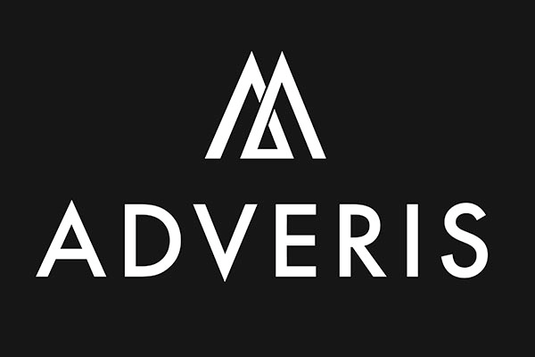

Meetup AFUP
Janvier 2025
- Association créée en 2001 pour promouvoir PHP et son écosystème
- Organise des conférences (Forum PHP, AFUP Day)
- environ 15 antennes dans toute la France
- afup.org/association/antennes
- Meetup tous les mois ⏰
- Du PHP et son environnement
- Et avec des apéros ! 🍻
Nous aider ?
- Speakers ! ⚠️
- Locaux
- Sponsoring (manger && boire)
Meetup parisiens à venir
- 05 Février : Node.js, Chapitre 12 - Pigment
- 25 Février : AFUP Paris - Wizards Technologies
Nous trouver
- youtube.com/@afupparis
- x.com/afup_paris
Actu AFUP

AFUP-DAY 2025

- Vendredi 16 mai 2025
- Lille, Lyon et Poitiers
Billetterie ouverte !
Super Apero 2025

Le 20 mars
Forum PHP
- Sponsor Chocolat à 800 €
- Dédiée aux freelances/devs qui souhaitent soutenir à titre personnel
- 1 place pour le Forum PHP 2025
- Lors de l’événement, vous serez remercié·e pendant les keynotes d’ouverture et de fermeture.
Aujourd'hui
- Wave function collapse avec Symfony UX, par Mathieu Ledru
- Deep inside http/2, par Maxime Veber
Et pour finir
Hébergé et apéro offert par Adveris
Merci à eux !
Bon meetup !